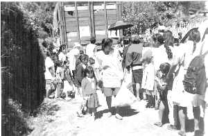

| L'amour en action |
Secours après désastre |
| Des écoliers marchent vers notre camion d'approvisionnement. |
Le 18 octobre 1999, un groupe d'initiés de Los Angeles comprenant deux personnes de nationalité mexicaine et un parlant espagnol sur des sujets médicaux et pouvant procurer quelques services de santé, se sont envolés pour Mexico.
| Des initiés s'occupent d'un enfant dans un centre médical de fortune |
Les deux jours suivants ont été occupés à acheter des articles de secours. Cela a été une chance qu'avec les dollars américains nous avons pu acheter une grande quantité de marchandises ! Des tonnes de fruits secs, des boîtes de conserves, de l'eau, des céréales, de la nourriture pour bébé, des gâteaux, des biscuits, des bonbons et d'autres articles alimentaires de même que des couches, des chaussettes, des souliers, d'épaisses couvertures, et des médicaments ont été chargés dans deux gros camions. En prenant connaissance de notre mission, des marchands ont même donné des kilos de fruits pour venir en aide aux victimes des inondations. Nous avons donné à ces gens des photos de Maître comme souvenir. Une marchande avait les yeux pleins de larmes quand elle nous a remerciés pour ce précieux cadeau.
Ensuite, de nombreux disciples de cet endroit ont travaillé jour et nuit avec nous pour préparer des sacs de marchandises pour chaque famille. Les chants de Maître remplissait l'air de la cour et donnait à chacun un surcroît d'énergie. Les disciples ont médité pendant quatre heures chaque jour et ont récité les Saints Noms tout au long de cette mission d'amour de Maître.
Il a fallu deux gros camions pour transporter tous les biens achetés sur la place du marché. Un des chauffeurs était un initié vivant à côté de Puebla, une des régions les plus affectées par les inondations. Le second chauffeur, vivait aussi près de la région inondée. Il est tombé amoureux de Maître pendant cette mission et a conduit son camion à travers des contrées où d'autres chauffeurs auraient sûrement refusé de se rendre ! Les deux chauffeurs ont pu nous fournir des informations concernant les régions les plus touchées et nous indiquer comment amener le lourd chargement directement aux villageois les plus nécessiteux.
| Une école dévastée par les flots en fureur. |
Un centre médical a été mis sur pied à la hâte dans un immeuble délabré. Là, nous avons soigné des maladies de toutes sortes : grippe, irritations des yeux, maux de gorge, hypertension jusqu'à la dépression. Chacun voulait avoir un petit livret-échantillon ou un prospectus ! Même les jeunes enfants prenaient avec empressement les livres de Maître et s'accrochaient à eux comme s'ils savaient parfaitement qu'on leur avait remis un trésor rare ! Il nous semblait que ces infortunés savaient instinctivement qui était Maître et que dans l'obscurité de ce qui apparaissait comme une interminable nuit de misère, une lumière rayonnait et touchaient leurs vies grâce à la bénédiction et le pouvoir de Maître. Les jours suivants, du vendredi à dimanche, nous avons continué à voyager vers six villages, tout en faisant d'innombrables arrêts le long de la route chaque fois que nous voyions des villageois ayant besoin de nourriture et d'eau.
Parmi les villages que nous avons visités, il y avait Zacapoaxtla, Dos Rios et Tanamoroya en Tezuitlan, Buena Vista et Atmoloni en Hueyapan ainsi que Thatlanqui et Aire Libre. Le vendredi, nous nous sommes arrêtés dans un très beau village de montagne et là encore avons distribué de la nourriture et des provisions à des centaines de personnes dans le besoin. Nous avons conduit le long des routes montagneuses, sans cesse accompagné du chant de Maître "Sing Allelujiah to the Lord". Nous avons admiré le merveilleux paysage tout en assistant aussi à la dévastation des inondations. Un imposant bâtiment scolaire avait été envahi par de gros blocs amenés par le fort courant de la rivière en crue. Dans le deuxième village de notre périple, un couple d'âge moyen amenait leur adorable petite fille à notre centre médical. Cette petite était épileptique mais la famille était trop pauvre et sans argent pour payer les soins. Au cours d'une crise d'épilepsie, leur fille est tombée la tête la première dans le feu lui brûlant une grande partie du haut du visage ! La blessure remontait à un an mais sa figure était toujours très mutilée. Ses yeux, dont les paupières avaient été brûlées, regardaient fixement sans cligner. Nous n'avons pu donner à cette famille que quelques petites provisions mais avons ajouté quelques centaines de dollars américains afin d'emmener leur fille dans un centre médical et reprendre le traitement. Nous avons relevé les nom et adresse de cette famille pour en parler à un groupe médical appelé Médecins Sans Frontière qui se rend dans les contrées les plus lointaines et soigne gratuitement les patients dans le besoin.
Dans les villages suivants des centaines de gens attendaient pour recevoir de la nourriture, de l'eau et d'autres provisions de première nécessité. Beaucoup de ces villageois sont venus à nous pieds nus tout couverts de corne dus à des années de marche sans chaussure. La plupart d'entre eux avaient prématurément vieilli par des vies dures et le manque constant de commodités courantes. Les villageois faisaient sagement la queue pendant que l'un des représentants du village appelait le nom de chaque famille. Notre troisième arrêt a été sans doute le mieux organisé. Là notre groupe a été à même de distribuer des centaines d'articles alimentaires et autres provisions urgentes dans un temps très court. Une fois encore le centre médical a traité des dizaines de patients, en plus d'apprendre aux gens l'importance d'un régime végétarien, quelques notions de nutrition et des soins en cas de petites blessures.
|  |
| Les villageois font la queue pour recevoir de la nourriture. |
Le matin suivant, les villageois ont fait à nouveau la queue attendant l'ouverture du centre médical. Nous avons trouvé encore un peu de provisions et avons eu assez de temps pour soigner les villageois les plus malades.
Une vieille femme nous a dit qu'elle venait de perdre son mari et tous ses enfants sauf un. Nous l'avons étreinte et avons pleuré avec elle. Une des femmes du village s'est avancée pour prendre cette femme dans ses bras, puis elle a été rejointe par le reste de la foule. C'était très touchant. Nous avons donné le reste de nos provisions à une infirmière du village pour qu'elle puisse s'occuper des enfants et des personnes âgées. Puis, disant au revoir à nos nombreux amis, nous sommes partis avec toute notre caravane en descendant la route montagneuse pour rentrer au centre Texcoco. C'était triste de se quitter mais en même temps nous étions contents. Notre souhait était juste d'avoir des fonds illimités d'argent de provisions et de force pour donner aux pauvres de ce monde qui souffrent. Cependant, heureusement, grâce aux vibrations d'amour de notre Maître tout puissant, nous avons pu au moins atteindre ce peuple mexicain.